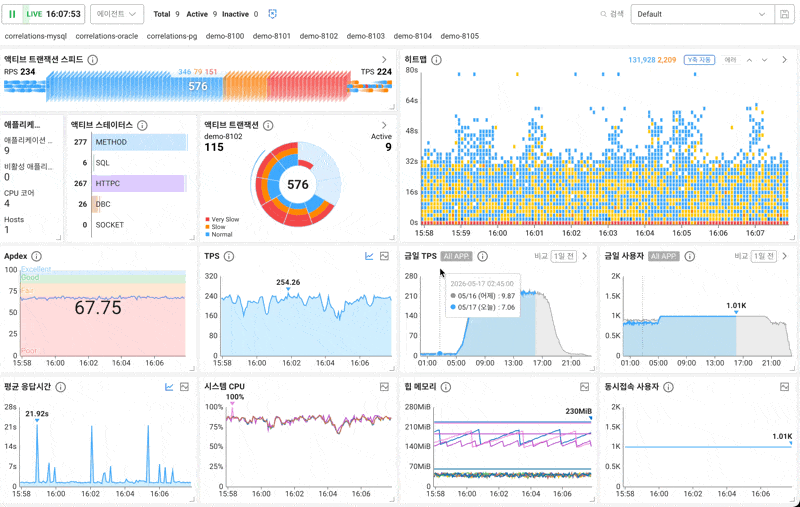
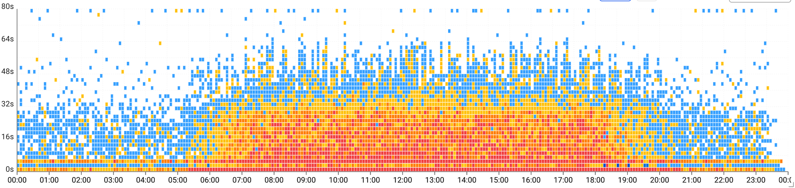
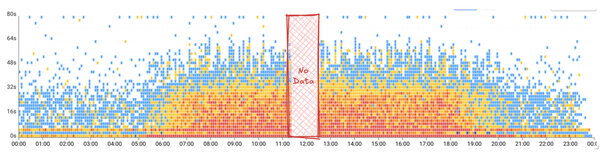

JSON
도
MySQL
도 없는
백엔드
대규모 데이터가 계속 들어올 때,
익숙한 도구를 다시 본 이야기.
2
about me
WHO I AM
저는
모니터링 서비스
를
만드는 회사에서 일합니다.
data sources
WAS
application servers
DB
database engines
K8s
containers & pods
…
os · network · cloud
Monitoring Dashboard
LIVE

CONTEXT · WHO
02 / 56
ROADMAP · 오늘 이야기
CH 0
대규모 데이터
CH 1
저장
RDB
CH 2
입력
JSON
CH 3
메모리
Map
4
오늘 이야기
TODAY · LARGE DATA IN OPS
오늘 이야기의 중심은
대규모 데이터
입니다.
NOT TODAY
빅데이터 플랫폼 ·
분석 시스템
Logs
Events
CDC
↓
Kafka · Stream
↓
Data Lake · Warehouse
↓
BI · ML · 분석가
VS
TODAY · RUNTIME · OPS
백엔드 서버가
매일 굴리는
데이터 사이클
01 · RECV
받고
→
02 · STORE
저장하고
→
03 · QUERY
다시 조회
↻ 24 / 7 · 끊김 없이 반복
CONTEXT · TOPIC
03 / 56
5
정의
TERM · LARGE DATA
대규모 데이터의
기준
이
무엇일까요?
SUBJECT · LARGE DATA
4 / 58
6
기준
METRICS WE REACH FOR
50억 건
12 TB
200K TPS
SUBJECT · LARGE DATA
5 / 58
7
정의
BREAKING POINT
"대규모 데이터" =
지금 시스템이
견디지 못하기 시작하는
양.
SAME INPUT
같은
데이터 양
SYSTEM · A
여유 있다.
SYSTEM · B
큐가 쌓이고 · 응답이 밀리고 · GC가 튄다.
SUBJECT · LARGE DATA
6 / 58
07
데이터의 성격
THREE PROPERTIES
한계에 빨리 닿는 데이터
압력 · 01
생성하는 주체가 많다.
압력 · 02
아주 짧은 주기로 계속 들어온다.
압력 · 03
한 번 들어올 때 딸려오는 정보가 많다.
SUBJECT · LARGE DATA
07 / 57
08
producer 사례
IOT SENSOR
IoT가 만드는 양.
생성 주체가 많고, 수집 주기가 짧을수록 양이 빠르게 늘어납니다.
sensor #01
sensor #02
sensor #03
sensor #04
sensor #05
sensor #…
+ N thousand
SIGNAL →
t0
TIME →
tN
INGEST
∑ flow
PRODUCERS
08 / 57
09
producer 사례
LOCATION COLLECTOR
위치가 만드는 밀도.
대상이 늘고 주기가 짧아질수록, 시간축 위에 촘촘히 쌓입니다.
t+0m
t+1m
t+2m
t+3m
t+4m
t+5m
(lat, lon, ts) · 1 point
× device count × second
PRODUCERS
09 / 57
11
한계에 빨리 닿는 데이터
CONTINUOUS · NEVER STOPS
모니터링도 계속 들어온다.

12
한계에 빨리 닿는 데이터
ONE REQUEST · CONTEXT ATTACHED
요청 하나가, 무겁다.
REQUEST · /api/checkout
정보가 붙을수록, 페이로드가 자란다
elapsed
142 ms
Request
status · elapsed
0.5 KB
├─
SQL
실제 쿼리 텍스트
~ 25 KB
├─
External API
3rd-party 호출
~ 50 KB
├─
Headers
trace-id · UA · auth
~ 60 KB
├─
Stack
호출 경로 · 프레임
~ 165 KB
├─
Trace
서비스 span 트리
~ 540 KB
├─
Service Flow
hop · 의존 순서
~ 600 KB
└─
Exception
message · stack trace
~ 1.2 MB
0
100 KB
500 KB
1 MB
1.5 MB
13
한계에 빨리 닿는 데이터
ONE REQUEST · MANY SERVICES
MSA에서는, 더 커진다.
MONOLITHIC
UI
Business Logic
Data Access
hop
DB
1 network hop
MICROSERVICES
UI
Microservice
Microservice
Microservice
Microservice
Microservice
Microservice
DB
DB
DB
DB
11 network hops
14
한계에 빨리 닿는 데이터
CONTINUOUS · 멈추지 않는 흐름
한 번 들어오고,
끝나지 않는다
.
무거운 payload · trace 가 시간축 위로 계속
시간 → 이미 쌓인 구간
지금도 들어오는 중 ▶▶▶
01
받기
계속 받고
02
쓰기
계속 쓰고
03
남기기
조회 대비해 계속
15
한계에 빨리 닿는 데이터
MULTI-TENANT · 한 경로로
SaaS가 되면,
더 어려워진다
.
고객마다 모니터링 대상도, 트래픽도 다르지만 하나의 수집 경로로 동시에 들어옵니다.
사용 고객
=
모니터링 서비스를 쓰는 팀·회사
고객 A
앱
DB
잔잔
고객 B
앱
k8s
로그
지금 피크 ▲
고객 C
DB
인프라
잔잔
하나의
수집 경로
▼
저장
한 고객의 피크가,
전체 수집을 흔들면 안 된다.
16
chapter transition
DATA → PRESSURE
이제 실제 사례로 보면.
이 문제가 운영 시스템 안에서 어떤 압력으로 나타나는지.
처음
충분해 보였던
구조
시간이 지날수록 압력이 누적된다
01
데이터는 계속 쌓이고
02
조회 패턴은 점점 복잡해지고
03
구조가 다른 의미를 갖게 된다
지금
다른 의미를
갖게 된 구조
CHAPTER · INTO THE CASE
14 / 58
RDB
›
JSON
›
Map
CHAPTER 1 / 3
저장
RDB
RDB
›
JSON
›
Map
18
출발점
CIRCA ~10 YEARS AGO
처음에는
Zabbix
를 사용했습니다.
NOW · 2026
지금이라면 자연스럽게 떠올렸을 조합
Prometheus
Grafana
Loki
OpenTelemetry
≈ 10 YEARS BACK
THEN · ~2015
우리 시작점
Zabbix
오픈소스 모니터링.
PHP
와
MySQL
위에서 돌았습니다.
CHAPTER · INTO THE CASE
15 / 58
RDB
›
JSON
›
Map
19
FREE TIER · TARGETS GROW
1 SERVER ≠ 1 DATAPOINT
무료 시기에
수집 대상
이 늘었습니다.
고객 A
고객 B
고객 C
고객 D
고객 E
고객 F
+ 외 다수
ZABBIX SERVER
한 곳으로
쏟아집니다
PER HOST · ↓
CPU
MEM
DISK
NET
PROC
CHAPTER · INTO THE CASE
16 / 58
RDB
›
JSON
›
Map
20
PER CUSTOMER · IT VARIES
+몇십 개 ≠ +몇십 개
하나를 붙여도,
하나가 아닙니다
.
고객마다 붙이는 대상 수가 제각각입니다. 겉보기 차이는 작은데, 받는 양은 그만큼이 아닙니다.
대상 1개가 보내는 것
→
CPU
메모리
디스크
네트워크
…
주기적으로, 끊임없이
고객 B
대상 100개
고객 A
대상 10개
시간 · 대상을 늘릴수록 →
들어오는 데이터 양 →
시작은 비슷
갈수록
격차 심해짐
CHAPTER · INTO THE CASE
17 / 58
RDB
›
JSON
›
Map
21
CEILING
SINGLE RDB · BURST
한 대로는,
터질 수밖에
없습니다.
들어오는 양
rows/s
수집 대상 수 →
10대
100대
1000대
한 대가 편히 받는 선 ≈ 초당 수천 건
한 대로는 못 버틴다
RDB
›
JSON
›
Map
22
HOLD WITHIN STRUCTURE
SCALE OUT · STACK
처음에는
기존 구조
안에서 버텼습니다.
Z
ZABBIX SERVER
#01 · 수집·운영
My
MySQL
#01 · 시계열 저장
Z
ZABBIX SERVER
#02 · 수집·운영
My
MySQL
#02 · 시계열 저장
Z
ZABBIX SERVER
#03 · 수집·운영
My
MySQL
#03 · 시계열 저장
· · · 더 늘린다
SCALE OUT
여러 대로 늘림
RDB
›
JSON
›
Map
23
RECURRENCE
DIMINISHING RETURNS
그래도,
화면이 다시 늦어졌습니다.
장비를 더 붙이면 잠깐 나아졌다가, 얼마 못 가 다시 밀립니다.
UI LATENCY · OVER TIME
P95 · DASHBOARD
↑ 느려짐
SCALE OUT #1
SCALE OUT #2
SCALE OUT #3
회복 폭이 점점 줄어듭니다
이제
장비 수
가 아니라,
어디에서 밀리는지
를 봐야 합니다.
→ FIND THE ROOT CAUSE
RDB
›
JSON
›
Map
그래도, 병목은
DB
처럼 보입니다.
값이 row로 쌓이고, 동시에 읽고, 동시에 지워야 합니다.
WRITE
5s / 10s 마다
INSERT row
끝없이 쏟아지는
수집 데이터
RDB
한 테이블에서
쓰고 · 읽고 · 지운다
READ · CLEANUP
대시보드 · 알람
SELECT (조회)
오래된 row 정리
DELETE (cleanup)
insert 밀림
·
latency↑
·
큐 적체
·
회복 지연
RDB
›
JSON
›
Map
저장 구조보다,
도구부터
.
RDB를 쓰고 저장이 밀리니, 질문은 이렇게 시작됩니다.
의심 · 01
인덱스가 문제인가?
의심 · 02
insert 방식이 비효율적인가?
의심 · 03
DB 설정을 더 조정해야 하나?
저장 구조를 바꾸기보다,
지금 도구를 더 잘 쓰는
쪽으로.
RDB
›
JSON
›
Map
튜닝
반복
.
튜닝하면 잠깐 좋아지고, 같은 피크가 또 옵니다.
한계선
여유
튜닝·증설
튜닝·증설
튜닝·증설
튜닝·증설
저점 ↑
TIME →
RDB
›
JSON
›
Map
27
질문
QUESTION · TUNING
이 도구를
더 잘 쓰는
문제인가,
아니면 데이터와 모델이
안 맞는
문제인가?
QUESTION · TUNING
24 / 58
RDB
›
JSON
›
Map
자연스럽게, 다른 저장소도 봅니다.
NoSQL
분산 저장소
Cassandra
시계열 DB
ClickHouse
Managed TSDB
RDB
›
JSON
›
Map
그런데,
제약
이 겹쳐 있었습니다.
어떤 걸 골라도, 결국 우리가 직접 떠안아야 하는 것들이 있었습니다.
또 하나의 분산 저장소
새 저장소를 하나 더 들여
직접 운영
. 도입은 공짜처럼 보여도,
운영 부담이 결국 비용
이 된다.
On-premises까지 지원
SaaS만이 아니라
고객사마다 설치
하고, 거기서도 운영을 책임져야 했다.
제한된 인력
초기 스타트업이라, 개발도 운영도
소수 인력
으로 움직이던 때였다.
그래서 남은 질문은 “어떤 DB?”만이 아니었습니다.
이 데이터 흐름을 꼭 지금 같은 방식으로 처리해야 하나?
RDB
›
JSON
›
Map
저장 실패는, 굉장히 민감합니다.
운영 데이터는 비거나 늦으면 바로 신뢰 문제가 됩니다.

이 데이터는 고객이
장애 여부를 판단하는 근거
다.
그 순간 데이터가 비면,
신뢰가 흔들린다.
RDB
›
JSON
›
Map
질문이
바뀐다
.
‘무엇이 가장 강한가’가 아니라, ‘무엇을 우리가 감당하는가’.
분산 저장소 · 클러스터
✕
쓰기
▶
▶
조회 · 화면
THE QUESTION
가장 강한 저장소가 뭐냐
→ 터졌을 때, 직접 들여다보고 막을 수 있는
경로
가 뭐냐
저장소를 더 키운다
→ 데이터 흐름을
손에 쥘 만큼 단순하게
RDB
›
JSON
›
Map
Row 모델의
불일치
.
계속 들어오는 관측 데이터를 매번 row로 풀고 인덱스 태우는 게 부담이 됐습니다.
OBSERVED · 관측 데이터
t
끊임없이 쌓이는 시간순 관측 데이터 →
⚠
→
MISMATCH
부담
RELATIONAL ROW MODEL
●
매 row 풀기
●
인덱스 태우기
●
제약·규칙 검사
한 점 = 데이터 1건
한 건을 펼쳐보면.
time
2026-05-30 14:08:21
server
web-07
tagHash
0x9f3c…
TAGS · 꼬리표
{
url:
/order
,
method:
POST
,
status:
200
}
FIELDS · 측정값
{
count:
1240
,
elapsed:
38
,
errors:
2
}
이 태그 조합이 거의 똑같이
끝없이 반복
된다.
time
TAG · 반복
val
14:08:21
/order·POST·200
38
[idx][tx]
14:08:22
/order·POST·200
41
[idx][tx]
14:08:23
/order·POST·200
37
[idx][tx]
14:08:24
/order·POST·200
39
[idx][tx]
같은 태그
가 매 row 반복 ·
[idx][tx]
는 안 쓰는데 강제
범용 RDB에선,
같은 비용
.
반복되는 태그를 매번 다시 적거나, 정규화해서 join하거나.
url
=/order
method
=POST
status
=200
한 건
× 끝없이 반복
(a) 통째 복사
매 row에 태그를 그대로 반복 저장
같은 문자열이 수억 번.
→ 저장량 폭증
(b) 정규화 + join
태그를 분리하고 조회마다 join
저장은 줄지만, 매 조회마다 다시.
→ 조회 비용 반복
그리고, 어느 쪽이든
매 insert마다, 안 쓰는 범용 인덱스 · 트랜잭션 비용
시계열은 거의 append뿐인데, 범용 DB는 쓰지도 않을 인덱스와 트랜잭션 보장을 매 쓰기마다 강제한다.
RDB
›
JSON
›
Map
우리 데이터에
맞춘 저장
.
무언가를 더 얹은 게 아니라, 안 쓰는 걸 깎아낸 쪽입니다.
범용 저장소
기본으로 다 따라온다
범용 인덱스
트랜잭션 보장
행마다 반복 태그
→
안 쓰는 건
깎아내고
이 데이터에 맞춰, 직접
딱 필요한 동작만
✓
반복 태그 압축
✓
시간순 정렬
✓
만료(TTL)
범용 저장소를 가져다 쓰는 대신,
우리가 만들어서 전부 들여다볼 수 있는
쪽.
터졌을 때 우리가 직접 열어볼 수 있느냐, 그 질문에 대한 답이기도 했습니다.
RDB
›
JSON
›
Map
저장
성능 회복
.
같은 데이터라도 어떤 모델에 맞추느냐로 비용이 크게 달라집니다.
BEFORE · row 모델
행마다 무게가 붙는다.
행마다 태그가 통째로 중복 저장
모든 컬럼에 범용 인덱스 유지
쓰기마다 트랜잭션·락 비용
저장 경로 압력 ↑ · 한 건의 무게 = 기준선
AFTER · 모양에 맞춘 저장
데이터 모양만큼만 쓴다.
태그는 한 번만(포인터로 참조), 본문은 값만 그대로
읽는 축에만 최소 인덱스
append 중심, 트랜잭션 비용 제거
저장 경로 압력 ↓ · 한 건의 무게 절반 아래로
RDB
›
JSON
›
Map
같은 방향의 사례들.
계속 쌓이는 데이터는, 결국 성격에 맞는 저장 구조를 다시 고민하게 됩니다.
InfluxDB
¹
범용 엔진을 떠나 자체 저장 엔진으로.
초기 범용 스토리지 위에서 출발했지만, 시계열 부하가 쌓이며 자체 저장 엔진(TSM)으로 다시 설계했습니다.
Prometheus
²
시간 기반 블록과 자체 TSDB.
데이터를 시간 단위 블록으로 끊어 보관하는 자체 TSDB 구조로, 시계열에 맞는 저장 형태를 택했습니다.
Uber · M3DB
³
Cassandra를 떠나 자체 저장소로.
범용 분산 저장소(Cassandra) 위에서 한계를 만나, 시계열 전용 자체 저장소를 다시 만들었습니다.
특정 제품 따라하기가 아니라,
방향
.
¹
https://docs.influxdata.com/influxdb/v1/concepts/storage_engine/
²
https://prometheus.io/docs/prometheus/latest/storage/
³
https://www.uber.com/blog/m3/
RDB
›
JSON
›
Map
CHAPTER 2 / 3
입력
JSON
RDB
›
JSON
›
Map
저장소는 멀쩡한데, 화면이
또 늦었습니다
.
규모 큰 고객들에서 비슷한 얘기가 자꾸 겹쳐 들어왔습니다.
“대시보드가 가끔 늦게 뜬다”
“알람이 한 박자 늦게 온다”
예전에 저장소가 밀릴 때 보던 그 증상.
그런데 이번엔, 저장소가
멀쩡
했습니다.
RDB
›
JSON
›
Map
병목이,
다른 곳
에서 보였습니다.
저장소는 끝까지 평평했고, 앱 서버의 CPU와 GC가 먼저 움직였습니다.
화면 응답 시간
ms
지연 ↑
저장소 insert latency
ms
OK
앱 서버 CPU
%
· GC
병목
붉은 음영 = 같은 피크 시간대
RDB
›
JSON
›
Map
한번
세어보면
.
한 건은 작습니다. 다만 사람이 누르지 않아도, 대상 하나가 5초마다 계속 찍힙니다.
건 / 일 =
대상 수
×
카테고리
×
(하루 86,400초 ÷ 5초)
세 항이 곱해진다. 하나만 늘어도 결과가 통째로 점프
대상 1개 · 한 종류만
하루 약 1.7만 건
대상이
수만 개
쯤 되면
하루
몇십억 건
트래픽 큰 고객 한 곳
(≈ 100만 TPS)
하루 수백억 건
한 건은 가벼운데,
5초 × 끝없이 × 대상 수
가 곱해지면 이만큼이 됩니다.
그리고 이게 전부,
받는 앱 서버
를 한 번씩 지나갑니다.
RDB
›
JSON
›
Map
같은 대응을
또 했지만
.
서버 늘리고 Heap 키우고 GC 옵션 보고… 또 같은 찜찜함.
서버 증설
Heap 조정
GC 옵션
→
잠깐 ↓
→
같은 피크 또 ↑
CPU · GC 부담 / 시간 →
같은 피크 천장
처방
처방
처방
처방
처방
한 번이면
용량 문제
.
→
같은 모양으로 반복되면,
데이터 하나가 왜 이렇게 비싼가
.
RDB
›
JSON
›
Map
프로파일링, 비용은
데이터 변환
에 있었다.
제일 두꺼운 막대가 뭐였을까요? 저장도 디스크도 아니었습니다.
제일 두꺼웠던 건
데이터가 JVM 안에서
모양을 바꾸는 비용
.
파싱
→
객체 생성
→
집계
저장도, 디스크도 아니었습니다.
cpu profile · self-time
JSON 파싱
객체 생성 · 박싱
집계 갱신
저장 write
디스크 flush
위 두 막대가 '데이터 변환' 비용
RDB
›
JSON
›
Map
두 군데,
입력
부터.
모든 데이터가 반드시 지나가는 문, 입력 경로부터.
HERE 먼저
01 · 입력
데이터가 들어오는 순간
모든 데이터가 반드시 통과하는 문.
여기서 막히면 그 뒤는 의미가 없다.
→
입력 먼저
집계 나중
later
02 · 집계
들어온 뒤
모으고 합치는 일은,
일단 들어오고 난 다음의 문제다.
RDB
›
JSON
›
Map
받는 데이터 한 건을 열어보다.
흔한 JSON. 그런데 이게 초당 수천 번, 거의 똑같이 들어옵니다.
{
"time"
:
1717052400000
,
"url"
:
"/order"
,
"count"
:
1240
}
서버는 이 똑같은 틀을
매번 처음 보는 것처럼
다시 읽는다.
RDB
›
JSON
›
Map
매 문장마다 자기소개를 다시 하는 사이.
JSON은 payload가 자기 자신을 매번 설명합니다.
🙂
CLIENT
"안녕하세요, 저는
시간
필드입니다."
"time": 1717052400000
"이건
URL
필드인데요…"
"url": "/order"
"저는
횟수
필드고요…"
"count": 1240
"안녕하세요, 저는 시간 필드입니다…" · 또 · 다시 · 매번
😐
SERVER
초당 수천 번이면, 친절이 아니라
비용
.
RDB
›
JSON
›
Map
이름표를 떼고, 순서를 약속하다.
서로 아는 사이면, 순서만 약속하면 됩니다.
JSON
이름표를 매번 같이 보낸다
{
"time"
:
1717052400000
,
"url"
:
"/order"
,
"count"
:
1240
}
계약
위치로 약속하고 값만 보낸다
[
1717052400000
,
"/order"
,
1240
]
첫째
=시간
, 둘째
=대상
, 셋째
=값
. 미리 약속.
RDB
›
JSON
›
Map
줄어든 건 '설명'이라는 비용.
양쪽이 구조를 알면, 매번 설명할 필요가 없습니다.
{
"time":
"1717052400000"
,
"url":
"/order"
,
"count":
"1240"
}
[
1717052400000
,
"/order"
,
1240
]
사라지는 것
필드 이름 · 중괄호와 콜론 ·
텍스트로 온 숫자
남는 것
전송 크기 850B
→ 200B 아래
· 객체 생성 한 건당
⅕
RDB
›
JSON
›
Map
한 군데를 바꿨더니,
줄줄이
가벼워졌다.
입력 포맷 하나를 바꿨을 뿐인데.
입력 포맷
바꿈
네트워크 크기
↓
파싱 비용
↓
객체 생성
↓
GC 부담
↓
JSON payload
25.6
KB
→
바이너리
7.46
KB
크기
70%↓
가벼운 지표 한 건도 같은 방향: 크기
¼
· 객체 생성
⅕
· 푸는 속도
2.4×
RDB
›
JSON
›
Map
비슷한 길
을 간 곳들.
짧은 주기로 같은 데이터가 쏟아지는 경로는, 다들 비슷하게 움직였습니다.
PROMETHEUS
¹
Remote-Write
메트릭을 원격 저장소로 보낼 때 Protobuf로 직렬화하고 snappy로 압축해 전송.
OPENTELEMETRY
²
OTLP
관측 데이터 전송 규격. gRPC·HTTP 모두 Protobuf 직렬화가 기본 경로.
핵심은
JSON이 나쁘다
가 아니다.
¹
https://prometheus.io/docs/specs/remote_write_spec/
²
https://opentelemetry.io/docs/specs/otlp/
RDB
›
JSON
›
Map
CHAPTER 3 / 3
메모리
Map
RDB
›
JSON
›
Map
한 군데 더, 집계 경로가 남았다.
입력을 줄여도, 피크 때 GC 신호가 남았습니다.
지난번 피크 · 큰 막대 하나
JSON 파싱 · 입력 포맷으로 해결
이번 피크 · 자잘한 객체가 수없이
생겼다 사라진다, 끝없이
// 코드만 보면 평범한 Map, key별 count/sum/max 갱신.
for
(Event e : batch) { Agg a = map.
computeIfAbsent
(e.key, k
->
new
Agg()); a.count++; a.sum += e.value; a.max = Math.max(a.max, e.value); }
…이쯤 되면 패턴이 보이죠.
RDB
›
JSON
›
Map
숫자가
객체
가 되는 순간.
Java Map에 숫자를 넣는 순간, 작은 상자에 담깁니다 (박싱).
PRIMITIVE
int
long
→
BOXED OBJECT
Integer
Long
담았다 꺼냈다 버리는 게 반복 →
heap · GC.
RDB
›
JSON
›
Map
구조는 두고, 표현만.
Map은 필요했습니다. 바꿀 건 구조가 아니라 숫자 표현.
구조 · 그대로 KEEP
Map · key별
key₀
누적 · 만료 · 최근값
key₁
누적 · 만료 · 최근값
key₂
누적 · 만료 · 최근값
+
표현 · 여기만 바꾼다
Integer 상자
↓
long 칸
값을 상자에 담지 않고 칸에 그대로.
앞에서 row를 버린 게 아니라 모양을 바꾼 것과 같은 방향.
RDB
›
JSON
›
Map
원시 타입 Map.
숫자를 상자에 담지 않고, 칸에 그대로 적어둡니다.
일반 Map
Map<K,
Integer
>
값마다 Integer 객체로 감싸 heap에 흩뿌립니다.
Integer
42
Integer
17
Integer
93
Integer
8
primitive Map
map<K,
long
>
박싱 없이 long 칸에 숫자를 그대로 적습니다.
42
17
93
8
count / sum / max 갱신마다 heap·GC
↓
· 갱신당 alloc
≈ 0
· 누적 처리
≈ 4×
RDB
›
JSON
›
Map
비슷한 도구가
따로 있다
.
박싱 비용을 피하려는 수요는 곳곳에 있습니다.
검색 엔진
Lucene
¹
역색인·posting을
int
/
long
원시 타입 배열로 직접 다룬다. (자체 packed 구조)
고성능 메시징
Aeron
²
저지연 경로에서 GC 압박을 줄이려
Agrona
의 원시 컬렉션을 쓴다.
라이브러리
fastutil · HPPC
³
박싱 없는 원시 타입 맵/리스트를 제공하는 것 자체가 존재 이유.
반복 갱신 많고 데이터 큰 경로에서만.
¹
https://lucene.apache.org/core/
²
https://github.com/aeron-io/agrona
³
https://fastutil.di.unimi.it/ · https://github.com/carrotsearch/hppc
RDB
›
JSON
›
Map
저장소 다음의 층위.
병목은 사라지기보다, 다음 약한 지점으로 옮겨갑니다.
01
저장소
row 모델로는 못 버틴다
→
데이터에 맞춘 저장
해결
02
입력 표현
JSON 파싱·객체 생성 비용
→
바이너리 계약
해결
03
메모리 표현
박싱·GC 비용
→
원시 타입 Map
해결
압력은 다음 층으로
다시, 대규모 데이터란.
대규모 데이터 = 절대 숫자가 아니라,
지금 시스템이 견디지 못하기 시작하는
양.
그 성격이 어느 층을 먼저 미느냐.
도구가 나쁜 게 아니다.
RDB도, JSON도, Java 객체도 나쁘지 않습니다.
RDB
JSON
Java 객체
나쁜 게 아니라, 어떤 데이터는
그 기본값의 비용을
너무 빨리
키운다.
TAKEAWAY
이 데이터는 어떤 성격 때문에 커지고 있고,
우리 시스템은 그 압력을
어디서 먼저
맞고 있나?
같은 결론이 아니라, 같은 질문을 가져가세요.
THANK YOU · 감사합니다
Tweaks
×
Mood — overall palette
Ops Dark
Paper
Blueprint
Accent — the "danger" color
Rust
Olive
Steel
Amber
Edition — voice & typography
Ops / Sans
Editorial / Serif